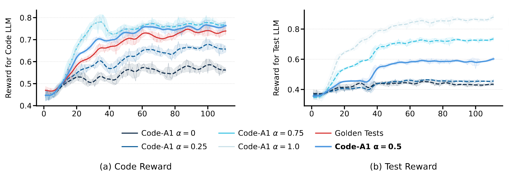

Training Dynamics
Training curves show the two models improving together. With $\alpha=0.5$, the Code LLM reward closely tracks the golden-test baseline, suggesting that dynamically generated tests can provide supervision comparable to human-annotated tests.
On the Test LLM side, the sustained reward remains strongest at the balanced setting, indicating that the generated tests stay both executable and adversarial enough to keep pushing the code model forward.